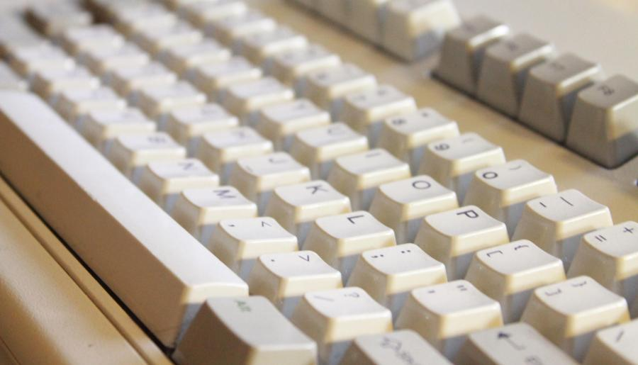

Any computer enthusiast will tell you that whereas computers in general have been getting better over the years, keyboards have been steadily degrading in their preference for design rather than build quality. Simply put, all keyboards nowadays (characterised by mushy rubber dome chicklet keys) are terrible. If all of this sounds like a weird geek fetish to you, stop reading now. Otherwise, read this series of posts which will give you a good general knowledge of the subject.
I had been debating for a while now whether or not to invest in a proper mechanical keyboard. Given that I am mostly mobile on a laptop, lugging around another keyboard would be a pain. But recently I stumbled across an IBM Model M back from 1991 (there is a birth certificate on its back).

After giving it a thorough cleaning, I have been using this for a month now and it is a beauty to type on -- I doubt I'll ever go back to using a regular keyboard again.
A few gotchas for the uninitiated:
- It's loud. Loud loud loud. Fine for your bedroom, but can be annoying in the office (you will bring it into work, won't you?). However it'll make everyone aware that you're definitely hard at work.
- It's big. So big that it won't neatly fit into any bag. You may want to consider a "Spacesaver" edition without the numpad.
- There is no super (windows) key. Annoying if you rely on it for shortcuts, but ultimately a small price to pay for angels tapdancing on your fingers.
- It's not hard to press. Although the keys are bigger, it's easier to type on this than on other keyboards.
- It uses a PS/2 cable. You will likely need to buy a PS/2 to USB adapter to use it.
For those who have had the same dilemma as I did, make the switch. You won't regret it.